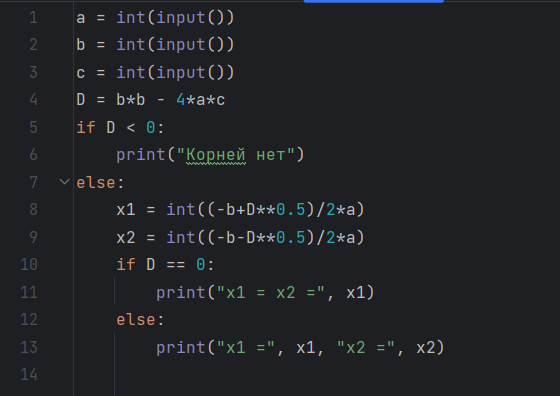
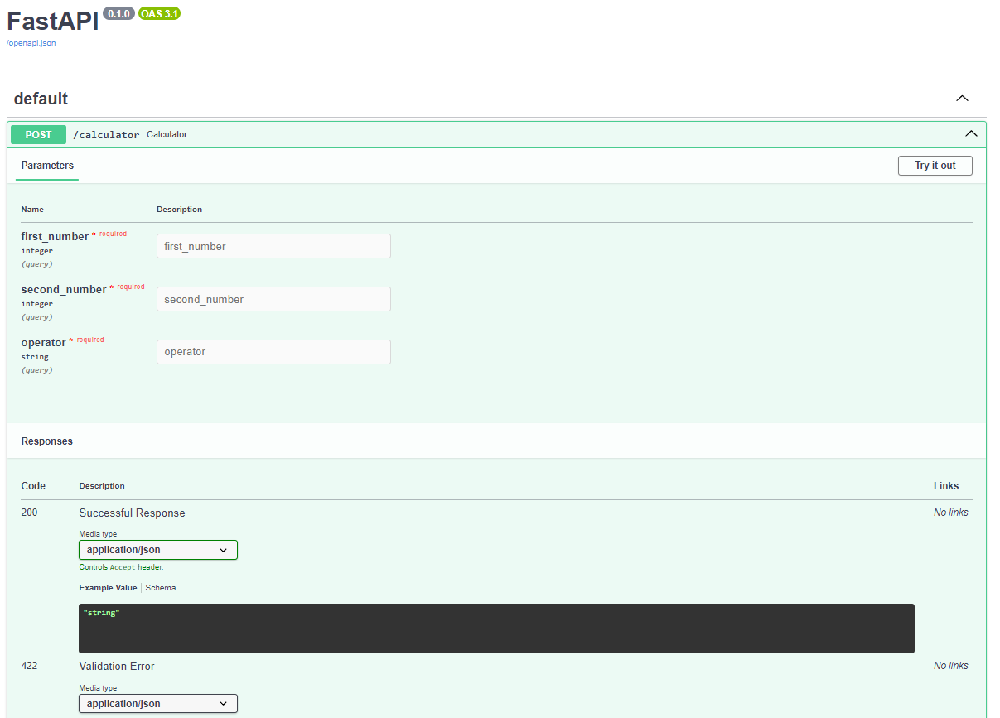

В первой лабораторной работе необходимо было установить на пк python, его окружения и
Pycharm - интегрированную среду разработки на питоне. После установки, нужно было
написать
код/программу, которая находит корни квадратного уравнения. Конечный код представлен на
картинке, так же
можно перейти на мой репозиторий на гитхабе.
Лабораторная работа №1

Во второй лабораторной работе необходимо было написать Rest сервер с помощью FastAPI,
который использует библиотеки wikipedia. Изначально необходимо было скачать библиотеки fastapi и
так же,
если в работе использовалась - библиотеку uvicorn. Сам сервер должен был выполнять функции
калькулятора.
На фото представлен готовый сервер с калькулятором, так же прилагается ссылка на гитхаб.
Лабораторная работа №2
